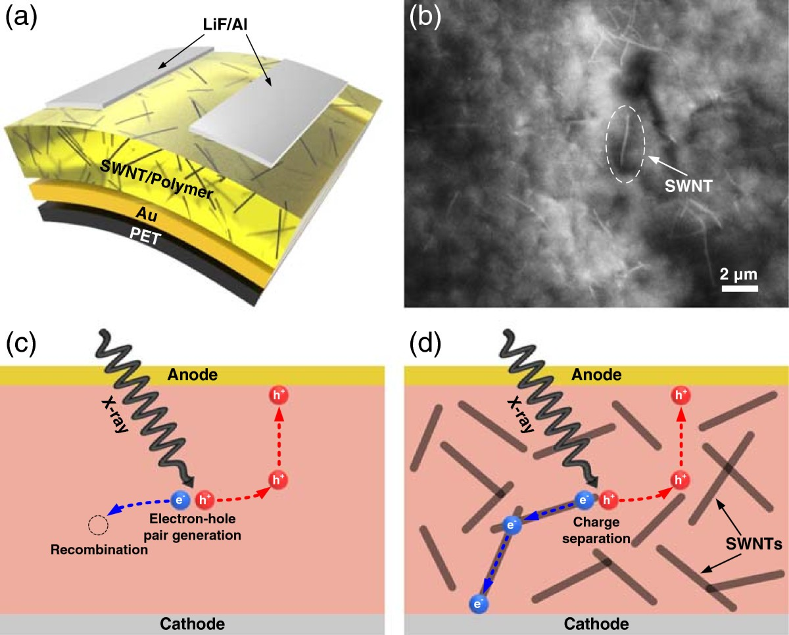

연구의 배경
유연한 고분자에 단일벽 탄소나노튜브를 넣어 X선 감지 성능을 조절합니다. 초록은 나노튜브 함량을 높일 때 전하 분리가 향상되는 한편, 암전류가 커지고 응답이 느려지는 상충 관계를 보고합니다.
무엇을 어떻게 했나요?
단일벽 탄소나노튜브(SWNT)와 고분자 사이의 계면은 X선으로 생긴 전하의 분리를 돕습니다. 다만 나노튜브 함량을 늘리면 암전류도 증가하고 응답이 느려지는 상충이 보고됐습니다.
따라서 감도 증가를 광전류/암전류 비와 시간 응답의 변화와 함께 살펴봐야 하는 재료 설계입니다.

단일벽 탄소나노튜브를 넣은 유연 고분자 X선 검출기의 구조와 전하 분리 원리를 보여 줍니다.
Heetak Han, Sanggeun Lee, Jungmok Seo 외. “Enhancement of X-ray detection by single-walled carbon nanotube enriched flexible polymer composite”. Figure 1. DOI: 10.1186/1556-276x-9-610. CC BY 4.0. 그림 내용은 변경하지 않았습니다.
남은 질문과 한계
추가로 살펴볼 질문은 X선 조사 이력, 선량률과 굽힘에 따라 적절한 나노튜브 함량이 달라지는지입니다.
비교할 때 살펴볼 조건
X선 스펙트럼과 선량률, 바이어스 전압, 감지층 두께·면적과 암전류 기준을 맞춰 비교해야 합니다.
함께 읽을 연구
Organic Semiconducting Single Crystals as Next Generation of Low‐Cost, Room‐Temperature Electrical X‐ray Detectors
관련 논문의 초록은 유기 단결정에서의 실온 직접 X선 검출과 안정적인 선량률 응답을 보고합니다. 나노튜브를 넣은 고분자 복합재와는 전하 수송 재료의 선택이 다릅니다.
단결정과 복합재의 두께, 바이어스와 선량률 차이를 함께 봐야 하며 감도만으로 우열을 정하기 어렵습니다.
초록을 참고한 소개RESEARCH NEWS
연구 소식
해설에 사용한 자료
해설은 초록과 기존에 읽은 Europe PMC 본문 XML을 참고합니다. Fig. 2–5의 원그림과 보충자료는 검토를 완료하지 않았습니다.